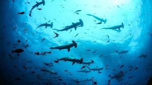

Avance médico: Terapia génica para la ceguera hereditaria:
Investigadores han desarrollado una terapia génica que revierte la ceguera hereditaria en pacientes con retinosis pigmentaria. Los resultados son prometedores y podrían cambiar la vida de millones de personas en todo el mundo.
Exposición de arte contemporáneo:
La Bienal de Arte Contemporáneo ha abierto sus puertas en Nueva York, mostrando obras innovadoras de artistas de todo el mundo. Desde instalaciones interactivas hasta pinturas abstractas, la exposición es un festín visual.
Lanzamiento del teléfono plegable:
Samsung ha lanzado su último dispositivo, el Galaxy Fold 3, que combina la portabilidad de un teléfono con la versatilidad de una tablet plegable. Los fanáticos de la tecnología están ansiosos por probarlo.
Elecciones en Reino Unido:
El Partido Laborista logra una aplastante victoria sobre los conservadores, y Keir Starmer será el próximo primer ministro. Los laboristas registran un triunfo histórico, mientras que el Partido Conservador sufre su peor resultado histórico.
Medio ambiente: Reserva marina en el Pacífico:
Las Islas Galápagos han sido designadas como una Reserva de Vida Marina, protegiendo su biodiversidad única y frágil. Esta decisión es un paso importante para preservar los ecosistemas marinos en el Pacífico.

Descubrimiento en Marte
Científicos de la NASA han confirmado la presencia de agua líquida bajo la superficie de Marte. Este descubrimiento podría tener implicaciones para futuras misiones espaciales y la búsqueda de vida en el planeta rojo.